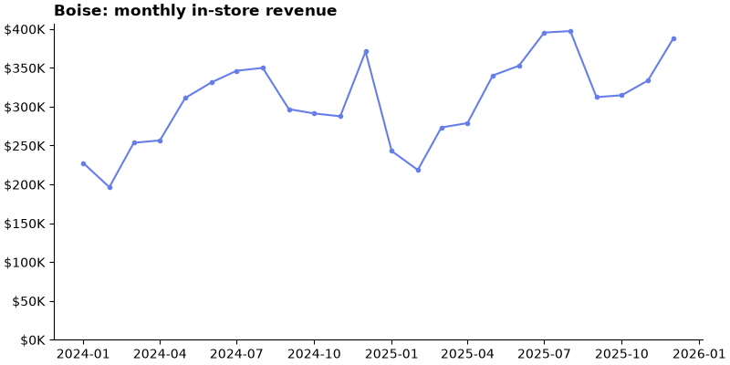
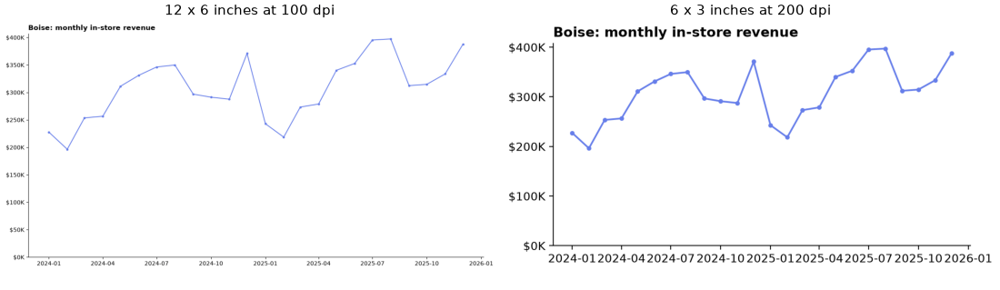
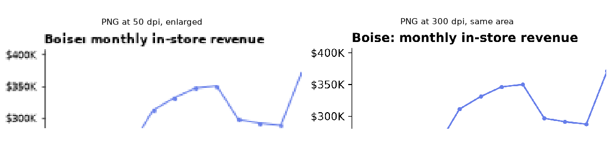
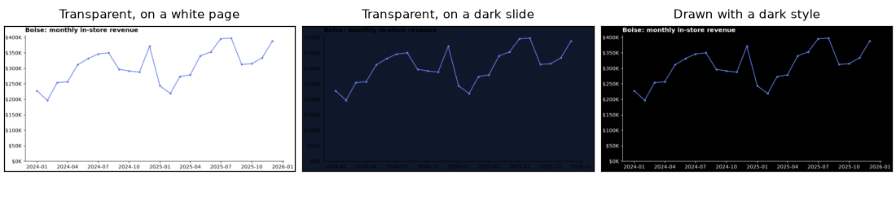
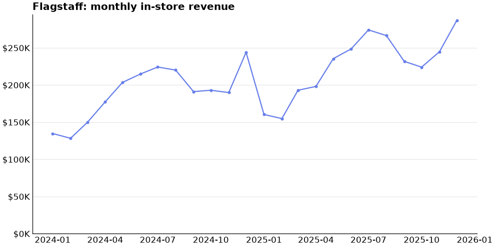
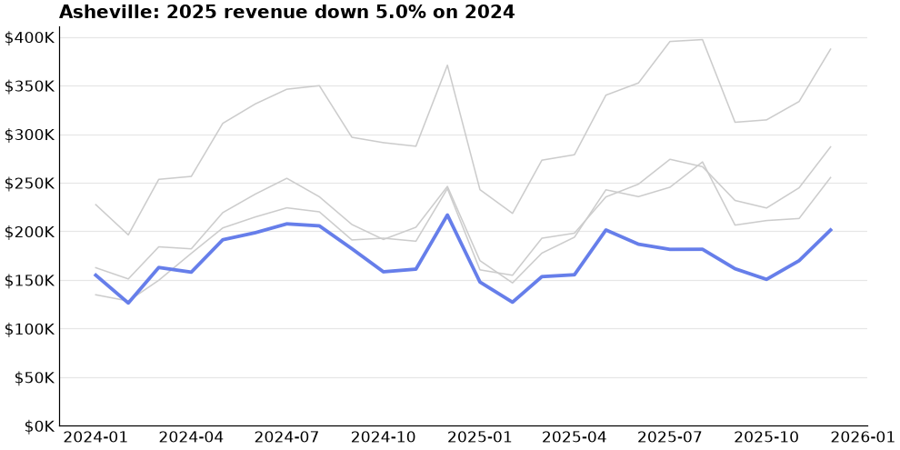

💾 Lesson 3.4: Saving Figures
Get your charts out of the notebook and into a web page, a slide deck or a printed report, at the right size, in the right format, looking the way you intended.
🎯 Learning Objectives
By the end of this lesson, you will be able to:
- Save a figure with
fig.savefig()and predict its size in pixels fromfigsizeanddpi - Choose between raster formats (PNG) and vector formats (SVG, PDF) for a given destination
- Explain why text looks tiny or huge in a saved chart, and fix it with the figure size
- Control the saved area and background with
bbox_inches,facecolorandtransparent - Write one function that applies a house style and saves for web, slides or print, then use it in a loop that closes each figure
In This Lesson
📦 The Last Step Is Part of the Work
A chart that lives only in your notebook has an audience of one. The charts that matter end up somewhere else: pasted into a slide, embedded in a web page, printed in a report. Each of those places has its own demands, and a chart that looked perfect in the notebook can arrive blurry, cut off at the edge, or with text too small to read. Almost always the cause is the same handful of settings, and they are simple once you see how they fit together.
💡 Mental Model: A Sheet of Paper and a Scanner
A Matplotlib Figure is a sheet of paper with a size in inches. Everything on it, including the text, is laid out on that sheet. Saving to an image is like scanning the sheet: the scanner's resolution, in dots per inch (dpi), decides how many pixels you get. A bigger sheet or a finer scan both give more pixels, but they are not the same thing: a finer scan makes everything sharper, while a bigger sheet makes the text smaller relative to the page. Keep those two knobs apart in your head and most export problems solve themselves.
💾 savefig Basics
Start a new notebook. You need the monthly revenue table again, and one function that draws a finished chart for any store, using what you learned in Lesson 3.3.
from pathlib import Path
import matplotlib as mpl
import matplotlib.pyplot as plt
import numpy as np
import pandas as pd
from matplotlib.ticker import FuncFormatter
daily = pd.read_csv("data/daily_sales.csv", parse_dates=["date"])
daily["month"] = daily["date"].dt.to_period("M").dt.to_timestamp()
monthly = daily.pivot_table(index="month", columns="store", values="revenue", aggfunc="sum")
stores = list(monthly.columns)
def thousands(x, pos):
return f"${x / 1000:,.0f}K"
def revenue_chart(store, figsize=(8, 4)):
"""Draw one store's monthly revenue. Returns the figure and its Axes."""
fig, ax = plt.subplots(figsize=figsize, layout="constrained")
ax.plot(monthly.index, monthly[store], color="#667eea", marker="o", markersize=3)
ax.set_title(f"{store}: monthly in-store revenue", loc="left", fontweight="bold")
ax.yaxis.set_major_formatter(FuncFormatter(thousands))
ax.set_ylim(bottom=0)
ax.spines[["top", "right"]].set_visible(False)
return fig, ax
fig, ax = revenue_chart("Boise")
plt.show()Saving is one method call on the figure. Put your output in its own folder, and create that folder from code so the notebook works on any computer.
out = Path("charts")
out.mkdir(exist_ok=True)
fig.savefig(out / "boise.png")
saved = out / "boise.png"
print(saved.exists(), f"{saved.stat().st_size / 1024:.0f} KB")
print(plt.imread(saved).shape)Output
True 35 KB
(400, 800, 4)
charts/boise.png, exactly as saved: 800 by 400 pixels.plt.imread() reads an image file back as a NumPy array, which makes it a handy way to check what you actually saved. The shape is (rows, columns, channels): 400 pixels high, 800 wide, and 4 values per pixel (red, green, blue, and alpha, the opacity).
Matplotlib chooses the file format from the extension you give.
print(sorted(fig.canvas.get_supported_filetypes()))Output
['avif', 'eps', 'gif', 'jpeg', 'jpg', 'pdf', 'pgf', 'png', 'ps', 'raw', 'rgba', 'svg', 'svgz', 'tif', 'tiff', 'webp']You will use three of these almost all the time: png, svg and pdf. The rest of the lesson explains which, when, and with what settings.
⚠️ fig.savefig(), Not plt.savefig()
plt.savefig() saves whatever pyplot considers the "current" figure, which is not always the one you mean. You are holding the figure in a variable, so say which one: fig.savefig(...). Common Mistakes shows what goes wrong otherwise.
📐 Inches, dpi and Pixels
The whole relationship is one multiplication:
pixels = inches × dpi
The figure above is 8 by 4 inches. Saved without a dpi argument it used the figure's own setting, 100, which gives 800 by 400 pixels. Ask for other values and check.
print("figure size in inches:", fig.get_size_inches(), " figure dpi:", fig.dpi)
for dpi in (72, 150, 300):
path = out / f"boise_{dpi}dpi.png"
fig.savefig(path, dpi=dpi)
height, width, channels = plt.imread(path).shape
print(f"dpi={dpi:>3}: {width} x {height} pixels, {path.stat().st_size / 1024:>4.0f} KB")Output
figure size in inches: [8. 4.] figure dpi: 100.0
dpi= 72: 576 x 288 pixels, 24 KB
dpi=150: 1200 x 600 pixels, 57 KB
dpi=300: 2400 x 1200 pixels, 128 KBSame sheet of paper, scanned at three resolutions. The picture is identical in every file; only the number of pixels describing it changes, and with it the file size. So how many pixels do you need? That depends on where the chart is going.
| Destination | What it needs | A good recipe | Pixels |
|---|---|---|---|
| Web page, notebook, email | About 800 to 1,200 px wide; small file | figsize=(9, 4.5), dpi=110, PNG | 990 × 495 |
| Slide (16:9, full width) | The slide's own pixel size | figsize=(9.6, 5.4), dpi=200, PNG | 1920 × 1080 |
| Printed report (6.5 in text width) | 300 dots per printed inch, or vector | figsize=(6.5, 3.5), PDF (or PNG at dpi=300) | 1950 × 1050 |
For print, set figsize to the size the chart will physically occupy on the page, and the dpi follows from the printer's needs (300 is the usual standard). For screens, think in pixels and work backward: a slide is 1,920 pixels wide, so 9.6 inches at 200 dpi.
💡 Why Does My Saved File Look Different from the Notebook?
A notebook displays figures at its own resolution, which is not the resolution savefig uses, and it trims the white margins around them. Neither affects your file. Judge a saved chart by opening the saved file, at the size it will really be shown. That one habit prevents most surprises.
🔎 Why the Text Came Out Tiny
Here is the problem that brings most people to a lesson like this. You need a 1,200-pixel-wide image. There are many ways to get 1,200 pixels: 12 inches at 100 dpi, or 6 inches at 200 dpi. The pixel counts are identical. The charts are not.
big_canvas, _ = revenue_chart("Boise", figsize=(12, 6))
big_canvas.savefig(out / "canvas_12in.png", dpi=100)
small_canvas, _ = revenue_chart("Boise", figsize=(6, 3))
small_canvas.savefig(out / "canvas_6in.png", dpi=200)
for name in ("canvas_12in.png", "canvas_6in.png"):
print(name, plt.imread(out / name).shape[:2])
plt.close(big_canvas)
plt.close(small_canvas)
fig2, axs = plt.subplots(1, 2, figsize=(10, 2.9), layout="constrained")
labels = ["12 x 6 inches at 100 dpi", "6 x 3 inches at 200 dpi"]
for ax, name, label in zip(axs, ("canvas_12in.png", "canvas_6in.png"), labels):
ax.imshow(plt.imread(out / name))
ax.set_title(label, fontsize=10)
ax.set_axis_off()
plt.show()Output
canvas_12in.png (600, 1200)
canvas_6in.png (600, 1200)
(ax.imshow(), which drew a heatmap from a table of numbers in Lesson 3.3, shows a picture as it is when the array holds red, green and blue values for every pixel, which is what plt.imread() returns.)
The reason is the mental model. Font sizes and line widths are measured in points, and a point is a physical length: 1/72 of an inch. A 10-point label is the same fraction of an inch on any sheet, so on a 12-inch-wide sheet it is a small part of the page, and on a 6-inch sheet it is twice as prominent. The dpi then scales the whole sheet, text included, into pixels.
✅ The Rule That Fixes It
Use figsize to control how big the text is relative to the chart, and dpi to control how many pixels you get. Text too small? Make the figure smaller in inches and raise the dpi to keep the pixel count. Text too large or the chart cramped? Larger figure, lower dpi. You can also raise font.size in your style, but changing the canvas scales the lines and markers along with the text, which usually looks better.
🖼️ Raster or Vector
Image formats come in two families, and they store a chart in completely different ways.
- A raster image (PNG, JPEG) is a grid of colored pixels. It has a fixed resolution: enlarge it and you see the squares.
- A vector image (SVG, PDF) is a list of drawing instructions: "a line from here to there, this text in this font". It has no resolution. It is redrawn sharply at any size, and in a PDF the text stays real text that can be selected and searched.
for extension in ("png", "svg", "pdf"):
path = out / f"boise_formats.{extension}"
fig.savefig(path)
print(f"{path.name:<20} {path.stat().st_size / 1024:>5.1f} KB")
svg_text = (out / "boise_formats.svg").read_text()
print("The SVG is text. It contains the title as a comment:", "Boise: monthly in-store revenue" in svg_text)Output (your sizes may differ slightly)
boise_formats.png 35.0 KB
boise_formats.svg 31.6 KB
boise_formats.pdf 13.3 KB
The SVG is text. It contains the title as a comment: TrueTo see what "fixed resolution" means, save the chart as a low-resolution and a high-resolution PNG and enlarge the same corner of each. A vector file would look like the right-hand panel at every zoom level.
fig.savefig(out / "zoom_low.png", dpi=50)
fig.savefig(out / "zoom_high.png", dpi=300)
fig3, axs = plt.subplots(1, 2, figsize=(10, 2.6), layout="constrained")
for ax, name, label in zip(axs, ("zoom_low.png", "zoom_high.png"), ("PNG at 50 dpi, enlarged", "PNG at 300 dpi, same area")):
image = plt.imread(out / name)
rows, cols = image.shape[:2]
ax.imshow(image[: rows // 3, : cols // 2], interpolation="nearest") # the top-left corner
ax.set_title(label, fontsize=10)
ax.set_axis_off()
plt.show()
| Format | Family | Best for | Watch out for |
|---|---|---|---|
| PNG | Raster | Web pages, slides, email, documents: works everywhere | Must be saved at the right pixel size for its destination |
| SVG | Vector | Web pages that must stay sharp at any zoom; handing to a designer | Not accepted by every slide or office program; huge with many points |
| Vector | Print, reports, multi-page chart packs | Does not display inline on a web page | |
| JPEG | Raster, lossy | Photographs | Smears sharp edges and text; no transparency. Avoid for charts |
When Vector Gets Heavy
A vector file stores every mark. For a line chart that is tiny. For a scatter plot it means one instruction per dot, and files balloon. The fix is rasterized=True on the heavy layer: the dots become an embedded image while the axes, text and title stay vector.
rng = np.random.default_rng(42)
x = rng.normal(size=50_000) # 50,000 simulated points
y = x + rng.normal(size=50_000)
scatter_fig, ax = plt.subplots(figsize=(7, 4), layout="constrained")
ax.scatter(x, y, s=4, alpha=0.2, color="#667eea")
ax.set_title("50,000 points")
scatter_fig.savefig(out / "scatter_vector.pdf")
ax.collections[0].set_rasterized(True) # same as passing rasterized=True to ax.scatter
scatter_fig.savefig(out / "scatter_mixed.pdf", dpi=200)
plt.close(scatter_fig)
for name in ("scatter_vector.pdf", "scatter_mixed.pdf"):
print(f"{name:<20} {(out / name).stat().st_size / 1024:>7.1f} KB")Output (your sizes may differ slightly)
scatter_vector.pdf 759.7 KB
scatter_mixed.pdf 131.8 KBThe mixed file is a fraction of the size and opens instantly, and its title and axes are still vector. Rasterizing only pays off when there are many marks: for a chart with a few thousand dots, plain vector is smaller, so measure before you decide.
✂️ Edges and Backgrounds
The Bounding Box
By default savefig saves the whole sheet, exactly figsize in size. bbox_inches="tight" instead crops (or grows) the saved area to fit what is drawn, with a small margin set by pad_inches. You will see it in nearly every tutorial, because without a layout engine it rescues labels that would otherwise be cut off. Notice what it does to the size.
fig.savefig(out / "boise_default.png", dpi=100)
fig.savefig(out / "boise_tight.png", dpi=100, bbox_inches="tight")
fig.savefig(out / "boise_tight_nopad.png", dpi=100, bbox_inches="tight", pad_inches=0)
for name in ("boise_default.png", "boise_tight.png", "boise_tight_nopad.png"):
rows, cols = plt.imread(out / name).shape[:2]
print(f"{name:<24} {cols} x {rows}")Output
boise_default.png 800 x 400
boise_tight.png 811 x 411
boise_tight_nopad.png 791 x 391The tight versions are no longer 800 by 400. That is the trade: bbox_inches="tight" guarantees nothing is cut off, and gives up control of the exact size. Since your figures use layout="constrained", everything already fits on the sheet, so you rarely need it. When a destination demands exact pixel dimensions (a slide, a web layout), leave it off.
Backgrounds
A figure has a background color, white by default, called its facecolor. transparent=True saves with no background at all, so whatever is behind the image shows through. That sounds ideal for slides. It is, as long as the slide is light.
fig.savefig(out / "boise_transparent.png", transparent=True)
corner = plt.imread(out / "boise_transparent.png")[0, 0]
print("top-left pixel (red, green, blue, alpha):", corner)
with plt.style.context("dark_background"):
dark_fig, _ = revenue_chart("Boise")
dark_fig.savefig(out / "boise_dark.png")
plt.close(dark_fig)
fig4, axs = plt.subplots(1, 3, figsize=(10, 2.2), layout="constrained")
panels = [("boise_transparent.png", "white", "Transparent, on a white page"),
("boise_transparent.png", "#0f172a", "Transparent, on a dark slide"),
("boise_dark.png", "#0f172a", "Drawn with a dark style")]
for ax, (name, background, label) in zip(axs, panels):
ax.set_facecolor(background)
ax.imshow(plt.imread(out / name))
ax.set_title(label, fontsize=10)
ax.set_xticks([])
ax.set_yticks([])
plt.show()Output
top-left pixel (red, green, blue, alpha): [1. 1. 1. 0.]
An alpha of 0 in the corner pixel confirms the background is fully transparent. The middle panel is the trap: the title and tick labels are still black. For a dark destination, draw the chart in a dark style (and check every color you set by hand). For anything else, the safest choice is an explicit solid background: fig.savefig(path, facecolor="white"), which also protects you from programs that show transparency as black.
🏠 A House-Style Save Function
You now know the settings. Typing them correctly, every time, for every chart, is how mistakes creep in. Put the decisions in one place: a table of presets, one per destination, and two small functions that use it. The style dictionary is the one from Lesson 3.3.
pinecrest_style = {
"font.size": 11,
"axes.titlelocation": "left",
"axes.titleweight": "bold",
"axes.spines.top": False,
"axes.spines.right": False,
"axes.grid": True,
"axes.grid.axis": "y",
"grid.color": "0.9",
"axes.axisbelow": True,
"xtick.major.size": 0,
"ytick.major.size": 0,
}
PRESETS = {
"web": {"figsize": (9, 4.5), "dpi": 110, "extension": "png"},
"slide": {"figsize": (9.6, 5.4), "dpi": 200, "extension": "png"},
"print": {"figsize": (6.5, 3.5), "dpi": 300, "extension": "pdf"},
}
def new_figure(kind="web"):
"""Create a figure sized for its destination: 'web', 'slide' or 'print'."""
return plt.subplots(figsize=PRESETS[kind]["figsize"], layout="constrained")
def save_chart(fig, name, kind="web", folder="charts"):
"""Save fig as folder/name_kind.ext with the preset's dpi and a white background. Returns the path."""
preset = PRESETS[kind]
folder = Path(folder)
folder.mkdir(parents=True, exist_ok=True)
path = folder / f"{name}_{kind}.{preset['extension']}"
fig.savefig(path, dpi=preset["dpi"], facecolor="white")
return pathThe figure is created at the right size before drawing, because, as you saw, the size decides how the text relates to the chart. Then the same drawing code produces all three versions.
def draw_revenue(ax, store):
ax.plot(monthly.index, monthly[store], color="#667eea", marker="o", markersize=3)
ax.set_title(f"{store}: monthly in-store revenue")
ax.yaxis.set_major_formatter(FuncFormatter(thousands))
ax.set_ylim(bottom=0)
with plt.rc_context(pinecrest_style):
for kind in PRESETS:
chart, ax = new_figure(kind)
draw_revenue(ax, "Flagstaff")
path = save_chart(chart, "flagstaff", kind)
plt.close(chart)
if path.suffix == ".png":
rows, cols = plt.imread(path).shape[:2]
print(f"{path.name:<22} {cols} x {rows} pixels")
else:
print(f"{path.name:<22} vector, {PRESETS[kind]['figsize'][0]} x {PRESETS[kind]['figsize'][1]} inches")Output
flagstaff_web.png 990 x 495 pixels
flagstaff_slide.png 1920 x 1080 pixels
flagstaff_print.pdf vector, 6.5 x 3.5 inches
charts/flagstaff_web.png: 990 by 495 pixels, styled and sized by the two functions.Three files, three destinations, and not one size or dpi typed by hand at the point of use. If the company later wants slides at a different size, you change one line of PRESETS. The pattern (settings in a dictionary, a function that reads them) is worth more than the particular numbers.
🔁 Many Charts, and Closing Them
One chart per store, per category or per month is a loop around what you just wrote. There is one thing to know first: pyplot keeps every figure you create alive until you close it. In a notebook this is hidden, because figures are closed for you after each cell is displayed. In a script, or a loop that makes many figures inside one cell, they pile up in memory.
plt.close("all")
print("open figures:", len(plt.get_fignums()))
for store in stores:
leak, ax = new_figure("web")
draw_revenue(ax, store)
save_chart(leak, f"{store.lower()}_leak") # saved, but never closed
print("after a loop without close:", len(plt.get_fignums()))
plt.close("all")
print("after plt.close('all'):", len(plt.get_fignums()))Output
open figures: 0
after a loop without close: 4
after plt.close('all'): 0Four figures is harmless. Four hundred is a memory problem, and after the twentieth Matplotlib starts printing RuntimeWarning: More than 20 figures have been opened. The habit is simple: create, draw, save, close.
with plt.rc_context(pinecrest_style):
for store in stores:
chart, ax = new_figure("web")
draw_revenue(ax, store)
path = save_chart(chart, store.lower())
plt.close(chart)
print(path, f"{path.stat().st_size / 1024:.0f} KB")
print("open figures:", len(plt.get_fignums()))Output
charts/asheville_web.png 46 KB
charts/bend_web.png 42 KB
charts/boise_web.png 45 KB
charts/flagstaff_web.png 40 KB
open figures: 0One File, Many Pages
When the charts belong together, a single PDF with one chart per page is easier to send than a folder of images. PdfPages collects figures into one file; the with block makes sure the file is finished properly.
from matplotlib.backends.backend_pdf import PdfPages
report = out / "store_report.pdf"
with plt.rc_context(pinecrest_style), PdfPages(report) as pdf:
for store in stores:
page, ax = new_figure("print")
draw_revenue(ax, store)
pdf.savefig(page)
plt.close(page)
print("pages:", pdf.get_pagecount())
print(report.exists(), "open figures:", len(plt.get_fignums()))Output
pages: 4
True open figures: 0⚠️ Common Mistakes
Export mistakes are frustrating because they show up late: after the meeting has started, or when the printer's proof comes back. Each one here has a quick check that catches it early.
1. Saving into a Folder That Does Not Exist
fig.savefig("exports/boise.png")Error
FileNotFoundError: [Errno 2] No such file or directory: 'exports/boise.png'What it means: savefig creates files, not folders. Fix: Path("exports").mkdir(parents=True, exist_ok=True) first, as save_chart() does.
2. An Extension Matplotlib Cannot Write
fig.savefig(out / "boise.xlsx")Error
ValueError: Format 'xlsx' is not supported (supported formats: avif, eps, gif, jpeg, jpg, pdf, pgf, png, ps, raw, rgba, svg, svgz, tif, tiff, webp)What it means: the format comes from the extension, and this one is not an image format. The same error appears for a typo such as .pgn. Fix: use one of the listed extensions.
3. plt.savefig() Saves the Wrong Figure
chart, ax = revenue_chart("Bend") # the chart you care about
scratch = plt.figure() # later, some other figure is created
plt.savefig(out / "bend_oops.png") # pyplot style: saves the *current* figure
image = plt.imread(out / "bend_oops.png")
print("every pixel is white:", bool((image[..., :3] == 1).all()))
plt.close(scratch)
plt.close(chart)Output (a file is written, and it is blank)
every pixel is white: TrueWhat happened: the "current" figure was the empty one created last, so that is what was saved. The classic script version of this bug is calling plt.savefig() after plt.show(): closing the chart window destroys the figure, and pyplot saves a fresh empty one. Fix: chart.savefig(...), and save before you show.
4. Expecting an Exact Size with bbox_inches="tight"
You asked for 1,920 by 1,080 and got 1,893 by 1,041, and the slide program stretched it. As you saw in Edges and Backgrounds, a tight bounding box changes the saved size. Fix: use layout="constrained" so nothing needs cropping, leave bbox_inches off, and confirm with plt.imread(path).shape.
5. Raising dpi to Fix Small Text
The text on a slide is too small, so you save again at dpi=600. The file is nine times larger and the text is exactly as small as before, because dpi scales everything together. Fix: a smaller figsize (with a higher dpi to keep the pixel count), as in Why the Text Came Out Tiny.
🛠️ Project: The Pinecrest Chart Pack
The regional manager wants a chart for each store: a web version for the intranet page, a print version for the quarterly binder, and one PDF with all four to email. You will produce the whole pack from one script-like cell, then verify it without opening a single file by hand. Continue in your lesson notebook (the project reuses PRESETS, new_figure() and save_chart()). Allow about 30 minutes.
🛠️ Step 1: A better panel (8 min)
Make the chart worth sending. Draw the store's line in color over the other three stores in gray (the small-multiples idea from Lesson 3.2), and put the store's 2025 growth in the title so each chart states its own finding.
yearly = daily.pivot_table(index="store", columns=daily["date"].dt.year, values="revenue", aggfunc="sum")
growth = (yearly[2025] / yearly[2024] - 1) * 100
print(growth.round(1))
def draw_store_page(ax, store):
for other in stores:
if other != store:
ax.plot(monthly.index, monthly[other], color="0.8", linewidth=1)
ax.plot(monthly.index, monthly[store], color="#667eea", linewidth=2.5)
direction = "up" if growth[store] > 0 else "down"
ax.set_title(f"{store}: 2025 revenue {direction} {abs(growth[store]):.1f}% on 2024")
ax.yaxis.set_major_formatter(FuncFormatter(thousands))
ax.set_ylim(bottom=0)Output
store
Asheville -5.0
Bend 3.8
Boise 9.3
Flagstaff 19.7
dtype: float64🛠️ Step 2: Save every store, two ways (8 min)
Loop over the stores and the two kinds. Create, draw, save, close. Collect the paths in a list as you go.
pack = Path("chart_pack")
saved_paths = []
with plt.rc_context(pinecrest_style):
for store in stores:
for kind in ("web", "print"):
chart, ax = new_figure(kind)
draw_store_page(ax, store)
saved_paths.append(save_chart(chart, store.lower(), kind, folder=pack))
plt.close(chart)
print(len(saved_paths), "files;", "open figures:", len(plt.get_fignums()))Output
8 files; open figures: 0
chart_pack/asheville_web.png. The title is generated from the data, so the one store that shrank says so by itself.🛠️ Step 3: One PDF for email (5 min)
combined = pack / "all_stores.pdf"
with plt.rc_context(pinecrest_style), PdfPages(combined) as pdf:
for store in stores:
page, ax = new_figure("print")
draw_store_page(ax, store)
pdf.savefig(page)
plt.close(page)
pages = pdf.get_pagecount()
saved_paths.append(combined)
print(combined.name, "has", pages, "pages")Output
all_stores.pdf has 4 pages🛠️ Step 4: Verify the pack (9 min)
Do not trust, check. Build a small table (a manifest) of every file: its type, its pixel size if it is an image, and whether it is suspiciously small. This is the step that catches a blank chart before the manager does.
rows = []
for path in saved_paths:
pixels = ""
if path.suffix == ".png":
height, width = plt.imread(path).shape[:2]
pixels = f"{width} x {height}"
rows.append({"file": path.name, "type": path.suffix[1:], "pixels": pixels,
"over_5_kb": path.stat().st_size > 5 * 1024})
manifest = pd.DataFrame(rows)
print(manifest)
print("all present:", all(path.exists() for path in saved_paths),
"| all web charts 990 x 495:", (manifest.loc[manifest["type"] == "png", "pixels"] == "990 x 495").all())Output
file type pixels over_5_kb
0 asheville_web.png png 990 x 495 True
1 asheville_print.pdf pdf True
2 bend_web.png png 990 x 495 True
3 bend_print.pdf pdf True
4 boise_web.png png 990 x 495 True
5 boise_print.pdf pdf True
6 flagstaff_web.png png 990 x 495 True
7 flagstaff_print.pdf pdf True
8 all_stores.pdf pdf True
all present: True | all web charts 990 x 495: True✅ Project Completion Checklist
- The folder
chart_packholds 9 files: 4 web PNGs, 4 print PDFs andall_stores.pdf - Every web PNG is exactly 990 by 495 pixels
all_stores.pdfhas 4 pages- Each title states that store's own 2025 growth, and Asheville's says "down"
len(plt.get_fignums())is 0 after the loops: every figure was closed- You opened at least one PNG and one PDF and looked at them at the size they will be used
🏋️ Hands-on Exercises
These continue in the lesson notebook and use its variables and functions.
🏋️ Exercise 1: Predict the Pixels
Before running anything, write down the pixel width and height of each of these: (a) figsize=(5, 3) at dpi=100; (b) figsize=(5, 3) at dpi=240; (c) figsize=(10, 6) at dpi=120. Then save the Bend chart each way and check. Which two have the same pixel size, and how will they differ?
💡 Hint
pixels = inches × dpi, separately for width and height. revenue_chart("Bend", figsize=...) draws the chart at any size.
✅ Solution
for label, figsize, dpi in [("a", (5, 3), 100), ("b", (5, 3), 240), ("c", (10, 6), 120)]:
chart, _ = revenue_chart("Bend", figsize=figsize)
path = out / f"bend_{label}.png"
chart.savefig(path, dpi=dpi)
plt.close(chart)
rows, cols = plt.imread(path).shape[:2]
print(f"({label}) {figsize} at {dpi} dpi: {cols} x {rows}")Output
(a) (5, 3) at 100 dpi: 500 x 300
(b) (5, 3) at 240 dpi: 1200 x 720
(c) (10, 6) at 120 dpi: 1200 x 720(b) and (c) are both 1,200 by 720. In (b), drawn on the smaller sheet, the text and line are twice as large relative to the chart.
🏋️ Exercise 2: Add a Preset
The marketing team posts square images, 1,080 by 1,080 pixels. Add a "square" preset to PRESETS and save the Boise chart with it. Choose the figure size so that the text is comfortably large, and verify the pixel size.
💡 Hint
Many combinations give 1,080 pixels: 10.8 inches at 100 dpi, 5.4 at 200, 3.6 at 300. Smaller inches means bigger text.
✅ Solution
PRESETS["square"] = {"figsize": (5.4, 5.4), "dpi": 200, "extension": "png"}
with plt.rc_context(pinecrest_style):
chart, ax = new_figure("square")
draw_revenue(ax, "Boise")
path = save_chart(chart, "boise", "square")
plt.close(chart)
print(path.name, plt.imread(path).shape[:2])Output
boise_square.png (1080, 1080)Nothing else had to change: new_figure() and save_chart() read whatever is in the table.
🏋️ Exercise 3: A Chart per Weekday Pattern
For each store, save a bar chart of mean revenue by day of the week as a web PNG named <store>_weekdays_web.png in a folder weekday_charts. Close every figure. Finish by printing the sorted file names and the number of open figures.
💡 Hint
Write a draw_weekdays(ax, store) function first and test it on one store. sorted(p.name for p in Path("weekday_charts").glob("*.png")) lists the results.
✅ Solution
def draw_weekdays(ax, store):
one = daily[daily["store"] == store]
by_day = one.groupby(one["date"].dt.dayofweek)["revenue"].mean()
ax.bar(["Mon", "Tue", "Wed", "Thu", "Fri", "Sat", "Sun"], by_day.values, color="#667eea")
ax.set_title(f"{store}: mean revenue by day of the week")
ax.yaxis.set_major_formatter(FuncFormatter(thousands))
with plt.rc_context(pinecrest_style):
for store in stores:
chart, ax = new_figure("web")
draw_weekdays(ax, store)
save_chart(chart, f"{store.lower()}_weekdays", "web", folder="weekday_charts")
plt.close(chart)
print(sorted(p.name for p in Path("weekday_charts").glob("*.png")))
print("open figures:", len(plt.get_fignums()))Output
['asheville_weekdays_web.png', 'bend_weekdays_web.png', 'boise_weekdays_web.png', 'flagstaff_weekdays_web.png']
open figures: 0🏋️ Exercise 4: Record What Made the Chart (Stretch)
Six months from now someone will ask where a chart came from. PNG files can carry text metadata. Save the Boise chart with metadata={"Title": ..., "Author": ..., "Description": ...}, putting the data file and date range in the description, then read the metadata back with Pillow (from PIL import Image; it is installed with Matplotlib) and print those three fields.
💡 Hint
Image.open(path).info is a dictionary of the file's metadata. Matplotlib adds a Software entry of its own.
✅ Solution
from PIL import Image
chart, _ = revenue_chart("Boise")
path = out / "boise_documented.png"
chart.savefig(path, metadata={
"Title": "Boise: monthly in-store revenue",
"Author": "Pinecrest analytics",
"Description": f"Source: data/daily_sales.csv, {daily['date'].min().date()} to {daily['date'].max().date()}",
})
plt.close(chart)
info = Image.open(path).info
for key in ("Title", "Author", "Description"):
print(f"{key}: {info[key]}")Output
Title: Boise: monthly in-store revenue
Author: Pinecrest analytics
Description: Source: data/daily_sales.csv, 2024-01-01 to 2025-12-31A chart that carries its own source is easier to trust and to reproduce. The same metadata argument works for PDF and SVG, with slightly different field names.
🎯 Quick Quiz
🎯 Check Your Understanding
Question 1: A figure is created with figsize=(8, 4) and saved with fig.savefig("chart.png", dpi=150). How large is the image?
Question 2: What does this print?
quiz_fig, _ = revenue_chart("Bend", figsize=(6, 3))
quiz_fig.savefig(out / "quiz.png", dpi=200)
plt.close(quiz_fig)
print(plt.imread(out / "quiz.png").shape)Question 3: A line chart is going into a printed annual report, and the designer may need to resize it during layout. Which format is the best choice?
Question 4: A chart saved from figsize=(16, 9) at dpi=120 fills a slide exactly (1,920 by 1,080), but nobody can read the labels. What is the best fix?
Question 5: A script saves 300 charts in a loop and gets slower and slower until it runs out of memory. What is missing?
❓ Common Questions at This Stage
Is a higher dpi always better?
No. Past what the destination can show, extra pixels only make files bigger and pages slower to load. A 1,920-pixel-wide slide cannot display more than 1,920 pixels. Match the destination: its pixel size for screens, 300 dpi at the printed size for paper, and vector when you do not know.
What about high-resolution ("Retina") screens?
Those screens pack two physical pixels into each "layout" pixel, so an image shown 800 layout pixels wide looks sharpest with 1,600 real pixels. For web images, saving at twice the displayed size (double the dpi, same figsize) and letting the page scale it down is a common approach. SVG avoids the question entirely.
The chart looks fine in my notebook but the saved file has labels cut off. Why?
The notebook display trims and pads the figure automatically; savefig saves the sheet as it is. If something extends past the edge of the sheet, it is cut. Create figures with layout="constrained" so everything is fitted onto the sheet, or as a quick rescue pass bbox_inches="tight" and accept a slightly different size.
Can I set the dpi once instead of in every savefig call?
Yes: "savefig.dpi": 150 in your style dictionary (and "savefig.facecolor": "white" for the background). A function with presets, like save_chart(), goes one step further because it also handles the folder, the file name and the format.
How do I save an interactive chart?
Matplotlib figures are static pictures, and everything in this lesson is about static files. Interactive charts that respond to the mouse are saved as HTML pages by other libraries. Module 7 covers them.
🌟 Going Further: Bonus Challenge
Turn this lesson into a tool you will keep. Put pinecrest_style, PRESETS, new_figure() and save_chart() in a file called charting.py in your project folder, and import them into a fresh notebook with from charting import new_figure, save_chart, pinecrest_style. Then extend save_chart() with an optional formats argument, so that save_chart(fig, "boise", "print", formats=["pdf", "png"]) writes both files and returns a list of paths. Finally, rebuild the footwear returns chart from Lesson 3.3 with your module and save it for a slide. Open it full screen and stand two meters back: can you read every label?
📓 Learning Journal
Take five minutes to write in your learning journal (the journal.md file you started in Lesson 0.1, or a paper notebook). Jot down:
- Key concepts you learned today
- Techniques that clicked (and the ones that have not, yet)
- Questions or confusion to come back to
- Ideas to try on your own
- Progress and feelings: how did this lesson go for you?
✍️ This lesson's prompt: Where do your charts usually end up: slides, documents, a web page, chat messages? Write down the preset (figure size, dpi, format) you would use for each of your real destinations. Then explain the sheet of paper and the scanner in your own words, including why a smaller sheet makes the text look bigger. Since this is the end of Module 3, add one line on which of its four lessons changed the way you look at charts the most.
📝 Lesson Summary
🎓 Key Takeaways
fig.savefig(path)saves the figure you name; the format comes from the file extension- pixels = inches × dpi.
figsizeis the sheet of paper,dpiis the scanner - Text is sized in points, so
figsizecontrols how big it looks relative to the chart; dpi does not - Raster (PNG) has fixed pixels; vector (SVG, PDF) is sharp at any size. PNG for screens and slides, PDF or SVG for print and resizing, never JPEG for charts
rasterized=Truekeeps vector files small when a layer has very many pointsbbox_inches="tight"prevents cut-off labels but changes the saved size;layout="constrained"usually makes it unnecessary- A transparent background does not make dark text visible on a dark page; save with a solid
facecoloror draw in a dark style - Put sizes, dpi and formats in a table of presets and save through one function
- In loops: create, draw, save, close.
PdfPagesgathers many figures into one PDF - Verify what you saved with
plt.imread(path).shape, and look at the file at the size it will be used
🏆 What You've Accomplished
- You predicted and confirmed the pixel size of saved figures
- You saw for yourself why the same pixel count can carry tiny or readable text
- You compared raster and vector output and watched a transparent chart vanish on a dark background
- You built a preset-driven save function and produced a nine-file chart pack with it, verified by a manifest
- You finished Module 3: you can go from a table to a chart that states a finding, is honest about its scales, and arrives intact wherever it is sent
🔭 Looking Ahead
Module 4 turns from pictures to numbers that summarize. In Lesson 4.1: Descriptive Statistics I: Center and Spread you will measure what you have so far been reading off charts: what "typical" means (mean, median, mode), how spread out values are, and why the mean and the median of Pinecrest's order totals sit almost $50 apart, as you saw on the histogram in Lesson 3.1. The charts you can now make will be how you check that the numbers are telling the truth.
📋 Before the Next Lesson
- Keep
pinecrest_style,new_figure()andsave_chart()somewhere you can copy from. You will be making charts in every remaining module. - Save one chart from an earlier lesson for a slide, put it in a real slide, and view it full screen.
- Look again at the histogram of order totals from Lesson 3.1 and write down, in a sentence, what you think "the typical order" is. Lesson 4.1 starts with that question.
🌱 Encouragement for the Journey
Four lessons ago you could load and reshape data, and the results stayed in tables only you could read. Now you can choose the right chart for a question, compose several into one figure, edit a draft until it makes its point, and deliver it in the right form for any destination. That is a complete skill, and it is the one other people will see first in your work. If the dpi arithmetic has not quite settled yet, that is fine: you built a function that remembers it for you, which is exactly what experienced people do.